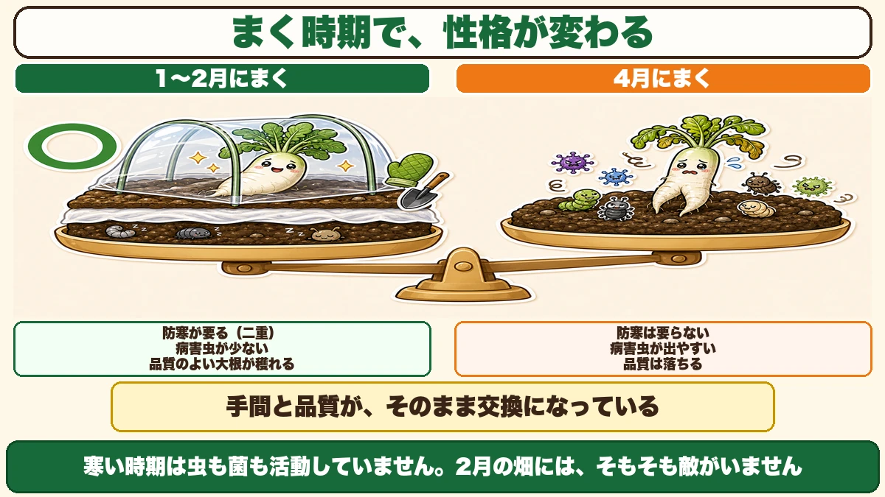
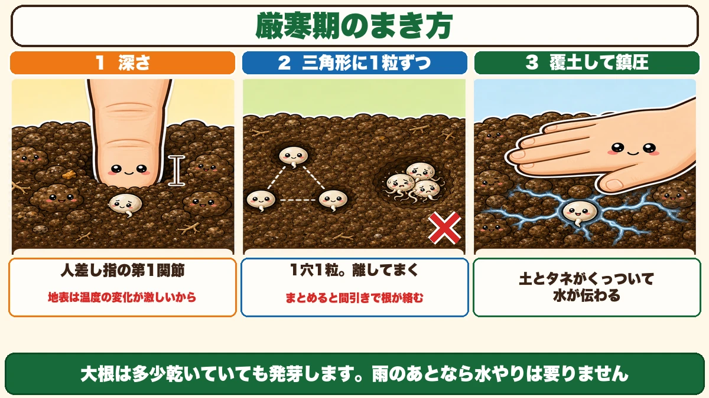
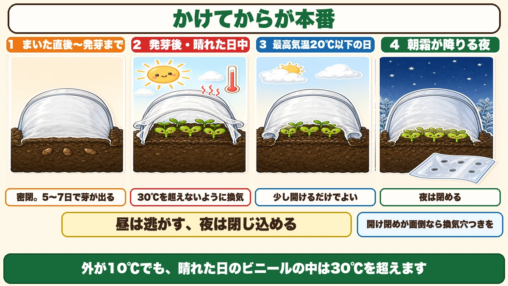
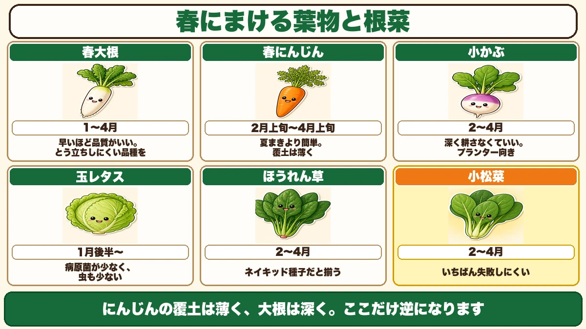

早くまくほど、いいものが穫れます🥬 春大根は2月がいちばん
🥬「春の大根は、いつもすが入る」
🥬「トンネルをかけたら、中が蒸れて枯れた」
🥬「暖かくなってからでいいと思っていた」
どうも、8150（えいこう）です🌱 家庭菜園歴8年、理科の教員免許を持っていて、有機・無農薬で野菜を育てています。
2月です。まだ寒いです。
でも、この時期にタネをまいた人が、いちばんいいものを穫ります。
先に、この記事でいちばん言いたいことを言っておきます。
★春の野菜は、早くまくほど品質がよくなります。
そのかわり、防寒の手間がかかります。つまり★手間と品質が、そのまま交換になっている。ここがはっきりしているのが、春まきの面白いところです☺️

📖 この記事の目次
春大根は「まく時期」で性格が変わる
1〜2月にまくと、こうなる
大根には、春まき・夏まき・秋まきがあります。このうち春まきは、一般的な地域で★1月から4月までまけます。
同じ春まきなのに、まく時期で結果がまるで違います。
★1〜2月（厳寒期）にまく
- 防寒が要る（不織布＋トンネルの二重）
- ★病害虫が少ない
- ★品質のよい大根が穫れる
★4月にまく
- 防寒は要らない
- ★病害虫が出やすい
- 品質は落ちる
なぜ早いほうがいいのか
理由は単純で、★寒い時期は虫も菌も活動していないからです。
大根の害虫は、気温が上がってから動き出します。カビの病原菌も同じです。2月の畑には、そもそも敵がいません。
そして寒い中でゆっくり育った大根は、身がしまります。急いで育った大根とは、包丁を入れたときの手ごたえが違います。
★手間をかけたぶんが、そのまま品質になる。私はこの交換が好きです。
★春まきの最大の敵は、とう立ち
花を咲かせる準備に入ってしまう
春まきには、はっきりした敵がひとつあります。とう立ちです。
とう立ちというのは、野菜が★花を咲かせる準備に入ることです。中心から茎が立ち上がってきて、栄養が全部そちらへ行きます。
こうなると、
- 大根は太らず、す（空洞）が入る
- 葉物はかたくなって、えぐみが出る
- かぶは割れる
つまり、★食べられなくなります。
なぜ春に起きやすいのか
野菜の多くは、こういうしくみを持っています。
★一定の大きさに育った株が、寒さに当たると「冬を越した」と判断して、花芽を作る。
春まきは、まさにこの条件を踏みやすいんです。まいて、育って、まだ寒い時期がある。野菜からすると「冬を越したぞ、そろそろ子孫を残そう」となります。
対策は、品種選びがすべて
やることはひとつです。
★とう立ちしにくい品種を選ぶこと。
タネ袋に「春まき用」「とう立ちが遅い」と書いてあるものを買ってください。前回のタネ袋の話でお伝えしたとおり、★答えは裏に書いてあります。
ここを間違えると、あとから挽回できません。育て方の問題ではなく、品種の問題だからです。私は一度、秋まき用の大根を春にまいて、全部とう立ちさせました。育て方はすべて正しかったのに、です。
春大根のまき方 ── 厳寒期の作法
★深さは、人差し指の第1関節
寒い時期にまくときは、いつもより少し深くまきます。
目安が分かりやすいです。★人差し指の第1関節まで挿した深さ。
なぜ深くするかというと、★地表付近は温度の変化が激しいからです。少し下のほうが、昼夜の差が小さくて安定しています。タネにとっては、そのほうが安心して動けます。

三角形に、1粒ずつ離してまく
点まきをするときは、こうします。
- 小さな★三角形を描くように、3か所に穴をあける
- ★1つの穴に1粒ずつ
- 穴どうしは、指1本分ほど離す
★1つの穴に3粒まとめてまかないでください。
芽が出たときに根が絡み合って、間引きのときに残したい株まで抜けてしまいます。離してまいておけば、いらないほうをハサミで切るだけで済みます。
★覆土したら、必ず鎮圧
タネに土をかけたら、上から手のひらでしっかり押さえてください。
これを鎮圧といいます。地味な作業ですが、★これをやると発芽が揃います。
土とタネがぴったりくっつくことで、土の水分がタネに伝わります。ふわっとかけただけだと、タネのまわりに空気の層ができて、水が届きません。
水やりは、必要なときだけ
ここは意外なのですが、★大根は多少乾いていても発芽します。
雨が降ったあとで土が湿っているなら、水やりは要りません。ほうれん草やにんじんとは、この点が違います。
土がからからに乾いていて、少しでも早く芽を出させたいときだけ、軽く水をやってください。
★トンネルの換気が、本当の技術
かけて終わり、ではない
トンネルは、かければ終わりではありません。★かけてからの管理が本番です。
私が最初にトンネルで失敗したのは、蒸れでした。かけたまま放っておいたら、中が真夏のようになっていて、せっかく出た芽が全部だめになっていました。

発芽までは、密閉
まいた直後は、しっかり閉めます。
- 不織布を土の上に直接かける（ベタがけ）
- その上にトンネル用の支柱を差して、ビニールをかける
- ★裾に土をかけて密閉する
この状態で、★5〜7日で芽が出ます。
芽が出るまでは、開けなくて大丈夫です。中の温度を上げて、発芽を早めるための時間です。
芽が出たら、換気を始める
ここからが本番です。ルールは3つ。
- ★中が30℃を超えないようにする
- 最高気温が20℃以下の日は、★裾を所々開けるだけでよい
- ★朝霜が降りるような日は、夜だけ裾を閉める
昼と夜で、やることが逆になります。★昼は逃がす、夜は閉じ込める。
晴れた2月の日中、ビニールの中は驚くほど暑くなります。外が10℃でも、中は30℃を超えます。温室というのは、そういうものです。
★面倒なら、換気穴つきのビニールを
毎日の開け閉めは、正直しんどいです。仕事に行く前と帰ってからでは、タイミングも合いません。
そういうときのために、★あらかじめ換気穴の開いたビニールがあります。
穴が開いているぶん保温力は落ちますが、★開け閉めが要らなくなります。芽が焼ける事故を防げるので、平日に畑へ行けない人には、こちらのほうが向いています。
私は場所によって使い分けています。毎日見られるうねは穴なし、週末しか見られないうねは穴あき。★道具は、自分の生活に合わせて選んでいいと思います。
春にまける葉物と根菜、6つ

春大根（1〜4月）
早いほど品質がいい野菜です。とう立ちしにくい品種を選んでください。
春にんじん（2月上旬〜4月上旬）
★夏まきより簡単です。にんじんの最大の失敗要因は乾燥ですが、春はそもそも乾きません。
にんじんのタネは光を好むので、大根とは逆に★覆土は薄くします。そして鎮圧はしっかり。
小かぶ（2〜4月）
★深く耕さなくていいので、プランターでも育ちます。
大根と同じアブラナ科ですが、育つ期間が短いぶん、とう立ちの心配が少なめです。土の準備がいちばん楽な野菜だと思います。
玉レタス（1月後半〜）
★春まきレタスは、かなり作りやすいです。理由が3つあります。
- ★寒い時期はカビの病原菌が少ない
- レタスはもともと虫の被害が少ない野菜
- ★春まきだと、その虫の心配もさらに減る
そして前回お話ししたとおり、★レタスは25℃を超えるとタネが休眠します。だから春まきのほうが、そもそも理にかなっているんです。
ほうれん草（2〜4月）
ほうれん草はかたい殻に守られていて、発芽が揃いにくい野菜です。
前回お話しした★ネイキッド種子（殻を取ってあるタネ）を選ぶと、はっきり変わります。ほうれん草で苦労した経験があるなら、ここだけ変えてみてください。
小松菜（2〜4月）
★いちばん失敗しにくい野菜です。
育つのが早く、寒さにも強い。何を作るか迷ったら、まず小松菜をまいておけば間違いありません。子どもと一緒に育てるのにも向いています。
2月にできることを、ひとつだけ
この記事の要点
- ★春の野菜は早くまくほど品質がよくなる。そのぶん防寒の手間がかかる
- 1〜2月まき＝★病害虫が少なく品質が良い／4月まき＝防寒不要だが病害虫が出やすい
- ★春まきの最大の敵はとう立ち。対策は★とう立ちしにくい品種を選ぶことがすべて
- とう立ちのしくみ＝★育った株が寒さに当たると「冬を越した」と判断して花芽を作る
- 厳寒期にまく大根は★人差し指の第1関節の深さ（地表は温度の変化が激しいため）
- 点まきは★三角形に、1穴1粒ずつ離して（まとめると間引きで根が絡む）
- ★覆土したら鎮圧。土とタネがくっついて水が伝わる
- ★大根は多少乾いても発芽する。雨のあとなら水やり不要
- トンネルは★発芽までは密閉、5〜7日で芽が出る
- ★発芽後は30℃を超えないよう換気。★昼は逃がす、夜は閉じ込める
- 開け閉めが面倒なら★換気穴つきのビニールを使う
- 春にまける6つ＝大根／にんじん／小かぶ／玉レタス／ほうれん草／小松菜
- ★にんじんの覆土は薄く（光を好む）、大根は深く。逆になる
- ★ほうれん草はネイキッド種子、迷ったら小松菜
全部やろうとしなくて大丈夫です。まずは小松菜のタネを1袋、買ってきてください。2月にまいて、不織布をかけておく。それだけで、春のいちばん最初の収穫になります🥬
次回は、3月の作業の話。1年でいちばん忙しくなる月を、先に見取り図にしておきます🌱
ここまで読んでくださって、ありがとうございました。
小かぶのタネ（金町小かぶ）
2月から4月にまけます。深く耕さなくていいので、プランターでも育ちます。大根と同じアブラナ科ですが、育つ期間が短いぶんとう立ちの心配が少なめ。土の準備がいちばん楽な野菜だと思います。
![[商品価格に関しましては、リンクが作成された時点と現時点で情報が変更されている場合がございます。]](https://hbb.afl.rakuten.co.jp/hgb/56e76943.db126f41.56e76944.bd847f20/?me_id=1270580&item_id=10012182&pc=https%3A%2F%2Fthumbnail.image.rakuten.co.jp%2F%400_mall%2Ftekutekushop%2Fcabinet%2Fseed%2Fhn130050.jpg%3F_ex%3D240x240&s=240x240&t=picttext "[商品価格に関しましては、リンクが作成された時点と現時点で情報が変更されている場合がございます。]")

にんじんのタネ
春まきは夏まきより簡単です。大根とは逆で、にんじんのタネは光を好むので覆土を薄くします。そのかわり鎮圧はしっかり。土とタネがぴったりくっつくことで、水が伝わるようになります。
![[商品価格に関しましては、リンクが作成された時点と現時点で情報が変更されている場合がございます。]](https://hbb.afl.rakuten.co.jp/hgb/565b7811.82562bc6.565b7812.698bf113/?me_id=1411559&item_id=10000090&pc=https%3A%2F%2Fthumbnail.image.rakuten.co.jp%2F%400_mall%2Fatelier-plum%2Fcabinet%2Fcompass1684807440.jpg%3F_ex%3D240x240&s=240x240&t=picttext "[商品価格に関しましては、リンクが作成された時点と現時点で情報が変更されている場合がございます。]")
不織布
2月にまくならビニールトンネルと二重に。3月なら片方、3月下旬なら不織布だけで足ります。発芽までは密閉、5〜7日で芽が出ます。芽が出たら中が30℃を超えないよう換気してください。
![[商品価格に関しましては、リンクが作成された時点と現時点で情報が変更されている場合がございます。]](https://hbb.afl.rakuten.co.jp/hgb/56bc237a.e97551b1.56bc237b.2513ed10/?me_id=1310260&item_id=10000879&pc=https%3A%2F%2Fthumbnail.image.rakuten.co.jp%2F%400_mall%2Fdiokasei%2Fcabinet%2F007fusyokufu%2F12g%2Fimgrc0092049705.jpg%3F_ex%3D240x240&s=240x240&t=picttext "[商品価格に関しましては、リンクが作成された時点と現時点で情報が変更されている場合がございます。]")
トンネル用ビニール
2月まきの二重がけの外側です。毎日の開け閉めが難しい方は、あらかじめ換気穴の開いたタイプを選んでください。保温力は落ちますが、芽が焼ける事故を防げます。道具は自分の生活に合わせて選んでいいと思います。
![[商品価格に関しましては、リンクが作成された時点と現時点で情報が変更されている場合がございます。]](https://hbb.afl.rakuten.co.jp/hgb/56bc237a.e97551b1.56bc237b.2513ed10/?me_id=1310260&item_id=10001120&pc=https%3A%2F%2Fthumbnail.image.rakuten.co.jp%2F%400_mall%2Fdiokasei%2Fcabinet%2F010maruti-bini-ru%2Fbini-ruopri%2F413190.jpg%3F_ex%3D240x240&s=240x240&t=picttext "[商品価格に関しましては、リンクが作成された時点と現時点で情報が変更されている場合がございます。]")
あわせて読みたい